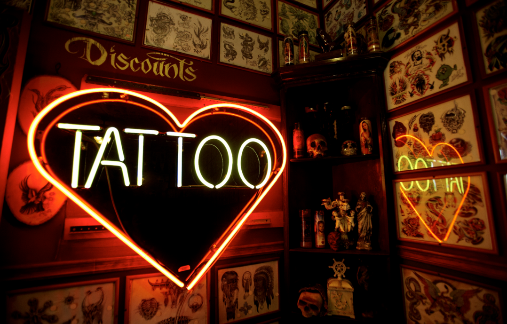
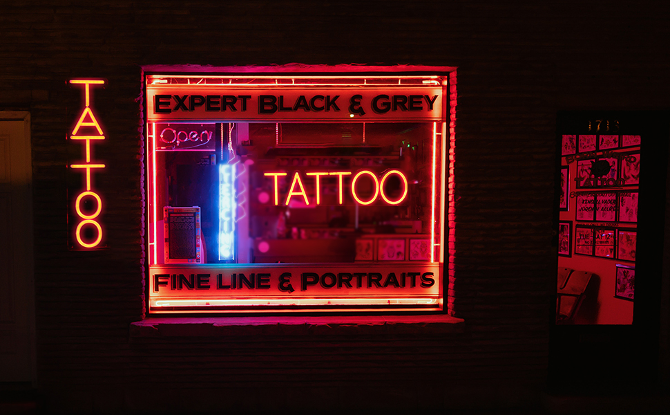

Hellcome!
Тату студия "Преисподняя"
Обо мне
Моё фото:

Занимаюсь тату 666 лет, делаю под пивом.
Мои основные стиле это блэкворк и органика, делаю также и другие стили.
Ниже моя камера пыток, всегда вас жду за болью!
Моя пыточная
Студия оборудована всеми новыми технологиями и вазелинами
Распологается в удобном месте города
Если вы записались на вечерний сеанс, то студия встретит вас красивым неоном
 
Organica
Мои последние работы
Органика (Organica) очень близка к биомеханике, можно даже назвать ее «дочерним» или «братским» стилем в татуировке. Аналогично биомеханике Органика сливается с телом, органами и тканями человека, опутывает их снаружи или произрастает изнутри.


Black work
Мои последние работы
Термином «блэкворк» обычно называют татуировки больших площадей, залитые сплошным черным. Иногда к блэкворку относят любую татуировку, выполненную черным цветом — в стиле ар-брют или дотворк, но это, строго говоря, неправильно.